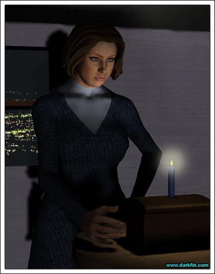

Age 29: Part VI

Victoria (Looking at a file) Now, Mr.... am I pronouncing this right? - Balzonya?
Defendant Just call me "Harry," your honor
Victoria (Taking off her glasses) Is that your real name, sir?
Defendant I had it legally changed three years ago
Victoria OK then... Harry - since this is your first offense, I'm going to go easy this time - I hope you realize that public indecency is not a laughing matter, get caught doing it again and you'll be looking at some hard time
Victoria (Banging down her gavel) I'll have order in this courtroom, people!
Defendant But, your honor, since I am hung like a camel, I feel it is my birthright to share my genetic blessing with the fine citizens of Duquesa Bay
Person What, Quartz Lake can't get in on the action?
Victoria (Turning red) MY PATIENCE IS WAFER THIN - the next person to say something inappropriate is going to get slapped with a $500.00 fine - now, Mr. Balzonya, after reviewing the photographic evidence, you really have nothing to be proud of, sir, but if you insist on doing this again, I'm sure plenty of inmates would be more than happy if you shared your show with them... am I making myself clear?
Defendant JUDGE MARTEL, I AM ORDERING YOU...
Victoria (Standing up) YOU ARE ORDERING ME?
Defendant (Stripping to the music) I AM ORDERING YOU TO HAVE A GOOD TIME ON YOUR BIRTHDAY
Victoria WHAT?
Victoria THIS... this is supposed to be a room of decorum!
Victoria (Covering her face) Oh my God
Victoria I'm going to get your for this, Cub
Cubby The stripper was Judge Cohan's idea
Victoria (Shaking her head) I'm sure it was
Victoria This is carrot cake, I hate carrot cake!
Cubby Yes, but it was the only cake they had that was big enough to feed all of these people
Victoria Well, I hope they enjoy it
Victoria Hi Mom, I'm leaving the courthouse now, I'll meet you at the club for dinner in...
Stephanie Hi Sweetie
Victoria Oh, I was just leaving you a message
Stephanie Listen, Vikki, I hate to do this to you but a long-time patient of mine was just brought in with a severe MI, I need to stay at the hospital - do you mind if we have dinner tomorrow night, instead?
Victoria Ah... no, that's fine
Stephanie I'm really sorry, Honey
Victoria No, Mom, I completely understand... I hope you patient pulls through
Stephanie I'll call you tomorrow... happy birthday
Victoria Thanks... 'bye
Victoria (Under her breath) I hope the sucker dies
Victoria Hey, Oni!
Ona Rosa (Smiling) Hello, Vikki
Victoria My plans just got changed for dinner - how about we discuss next week's charity auction over a meal at that new Italian place?
Ona Rosa Ooh, shoot - I'd love to but this is one of those rare nights that my husband will be home for dinner - how about we go for lunch tomorrow?
Victoria (Forcing a smile) That sounds great
Ona Rosa I'll see you then... oh, and happy birthday!
Victoria Thanks
Victoria Judge Haskins, I was wondering if you'd like to discuss the re-election campaign over drinks tonight?
Judge (Rushing out the door) I'd love to, Martel, but your carrot cake has given me the runs - we'll discuss it later this week - oh, and congratulations on getting older!
Victoria Jesus, Bradley, you scared the living crap out of me!
Brad (Kissing his sister's cheek) Sorry, Vic, Happy B-day!
Victoria Thanks
Brad How old are you now?
Victoria 35
Brad Wow, you're old!
Victoria (Opening her gift) Shut up, Squirt - is this a candle?
Brad Yeah, from my new shop
Victoria I HATE candles - you know the scents make me gag
Brad C'mon, it's a cardinal rule that all chicks like candles!
Victoria I'm not like "all chicks"
Brad No shit
Victoria I wanted a new nine iron
Brad Oh, Griffin has got you covered there - he bought you a new set of clubs
Victoria Excellent, he's my favorite brother for this year
Brad Except he thinks your birthday is next week
Victoria I strike my previous statement from the record
Brad Aren't you supposed to be doing something with Ben and Claudia?
Victoria (Rolling her eyes) Yeah, this weekend - since little Hannah's birthday is two days after mine, we're doing a combo celebration at Chuck E. Cheese this weekend
Brad (Making a face) HA HA
Victoria Knock it off or I'll drag you along
Brad Hey, while I'm here - do you think you can fix a speeding ticket for me?
Victoria OH, BRADLEY, PLEASE
Brad It's just a little one
Victoria FINE... but you're taking me out to dinner
Brad Can't - gotta concert at SCU to promote tonight... you're welcome to tag along
Victoria What band is it?
Brad A post-punk trio called "The Sickening Christians"
Victoria On second thought... no
Brad I'll make them thrash out "Un-happy Birthday" to you
Victoria That's OK, you go and have a good time
Brad I thought you were supposed to have dinner with mom?
Victoria She's stuck at the hospital
Brad Surprise - what about dad?
Victoria He sent me some flowers and the same gold earrings he bought Ursula for her birthday
Brad I love our parents - look, if we hurry, we could swing by a sandwich shop or something
Victoria (Giving her brother a hug) I appreciate that, I really do, but the dress shop had a nice lunch for me today - you go on to your concert and we'll have dinner another time
Brad (Returning the hug) Oh, and Vic...
Victoria Don't worry, I'll take care of the ticket
Brad (Winking) I was going to say "Happy Birthday!"
Victoria (Watching him hop back into his truck) Uh-huh, 'bye Bradley!
Victoria (Typing furiously) I don't agree with the direction the character is taking - she's being deconstructed in front of our eyes for silly, ratings-ploy reasons - it's disturbing!
On-line chatter dUde U R distrubing bogree totally ROCKS now U SUCK:-PPPPP
Victoria WHY AM I DOING THIS?
Victoria Hey you - I hope all is going well with the conference in Denver - um, I miss you - if I didn't have an important case tomorrow, I'd fly over there tonight - and thanks of for the electronic greeting card... it means a lot, 'bye

Victoria Happy happy birthday, from all of us to you, we wish it was our birthday, so we could party too... yay
Victoria Hello?
Deep voice Why don't you come and celebrate with us tonight, Victoria?
Victoria (Shaken) I TOLD YOU, I WANT NOTHING MORE TO DO WITH YOU PSYCHOS - STAY THE HELL AWAY FROM ME
Victoria I wonder if I'm going to make another 35 years?